Chapter 22: Final Test and Reliability
Animated figures. Each loops automatically.

Bathtub curve and burn-in.
Interactive version

Final test and binning.
Interactive version

Accelerated aging (electromigration).
Interactive version